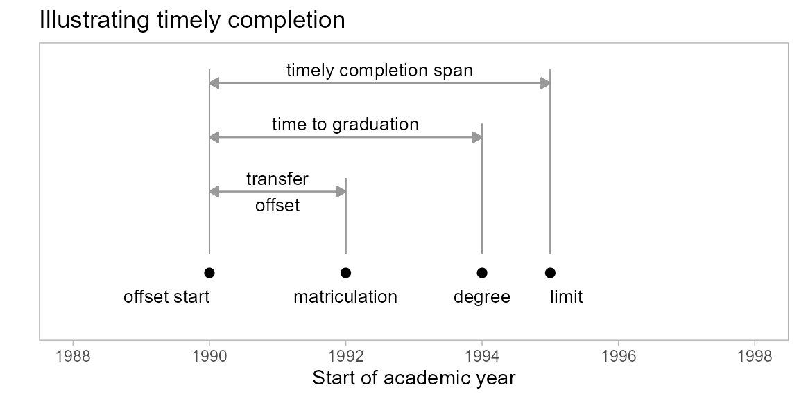

Some persistence metrics, e.g. graduation rate, require that students earn their degrees in a timely fashion, typically in no more than 6 years. When counting the number of graduates, only degrees earned within the timely completion span are included. All other degrees are re-coded for aggregation with the non-graduates.
Timely completion terminology is illustrated in the figure. Definitions are given below.

When applying the timely completion constraint, students are counted as program graduates only if their time to graduation is no greater than the timely completion span; otherwise their they are aggregated with the program non-graduates.
midfieldr functions
subset_feasible()timely_completion()packages
# packages used
library(midfieldr)
library(midfielddata)
library(data.table)
library(ggplot2)
# print max 20 rows, otherwise 10 rows each head/tail
options(datatable.print.nrows = 20, datatable.print.topn = 10)timely_completion()
The first argument, id, is required. The remaining arguments all have default settings. The last three arguments accommodate using data sets other than those from midfielddata. Arguments after the ellipsis (…) must be named if used.
timely_completion(
id,
...,
span = NULL,
term_transfer_max = NULL,
data_students = NULL,
data_terms = NULL,
data_degrees = NULL
)id character vector of student IDsspan number of years to define timely completion, default is 6 yearsterm_transfer_max maximum terms of transfer credit for determining years to graduation, default is 4 terms (2 years)data_students student attributes data set, midfieldstudents or equivalentdata_terms term attributes data set, midfieldterms or equivalentdata_degrees degree attributes data set, midfielddegrees or equivalentThe primary input to subset_feasible() is a character vector of student IDs. To illustrate its use, we use the built-in data set rep_ever from the engineering case study as developed in the Stickiness metric vignette (link).
View its help page by running
? rep_everThe data are loaded with midfieldr.
# view the example IDs
str(rep_ever)
#> chr [1:11862] "MID25783166" "MID25783178" "MID25783197" "MID25783227" ...This vector of IDs is the input to subset_feasible(), which performs the subsetting for completion feasibility.
# filter IDs for feasible program completion within data limit
feasible_id <- subset_feasible(rep_ever)
# examine the result
str(feasible_id)
#> chr [1:9281] "MID25783178" "MID25783197" "MID25783441" "MID25783491" ...In this instance, we started with 11,862 enrollees. After applying the criteria for feasible completion, we retain 9281 students. These students either graduated (demonstrating the feasibility of completing their programs before the data limit) or they matriculated no later than their matriculation limits.
Related vignettes
timely_completion()
change: use the rep_ever IDs to illustrate using the function
The program group for the engineering case study is included with midfieldr as the built-in data set rep_group. View its help page by running
? rep_ever The data are loaded with midfieldr.
# examine the result
str(rep_ever)
#> chr [1:11862] "MID25783166" "MID25783178" "MID25783197" "MID25783227" ...The argument of timely_completion() is a vector of student IDs. The function returns a data frame with two columns keyed by ID: a numerical variable years_to_grad, giving the time to graduation; and a logical variable is_timely, stating if the graduate satisfies the timely completion criterion.
Example output of timely_completion(id)
#> id years_to_grad is_timely
#> MID001 5 TRUE
#> MID002 7 FALSE
#> MID003 <NA> FALSE
#> MID004 5 TRUE
#> MID005 6.5 FALSE
#> --- Related vignettes
rep_ever IDstimely_completion() worksfunction arguments
timely_completion(
id, # character vector of student IDs
...,
span = NULL, # numeric scalar, number of years to define
timely completion, default 6 years
term_transfer_max = NULL, # numeric scalar, maximum number of terms of
transfer credit to offset matriculation,
default 4 terms
data_students = NULL, # data frame of student attributes
data_terms = NULL, # data frame of term attributes
data_degrees = NULL # data frame of degree attributes
)